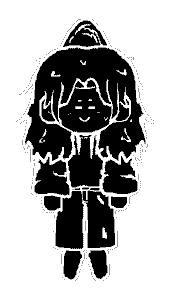
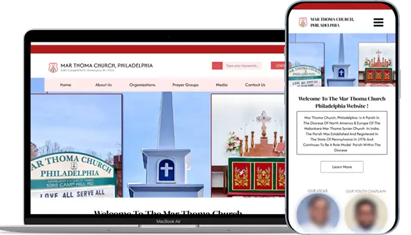
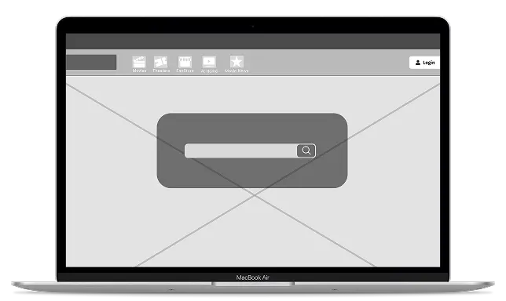

Hey! I'm Christina!
I’m a passionate designer with a love for creating. I design with the intention of creating impactful, engaging, and intuitive user experiences.
Read More About Me!
Designing A Guitar Tuning App

Tune Today lets users get through the task of tuning their guitar to jumping straight into learning a song!
Case Study
UX/UI Design
Wireframes
Check it Out!
Redesigning A Church Website
The Philadelphia Mar Thoma Church Website provides information and encourages engagement of many different events
Case Study
UX/UI Design
Wireframes
Check it Out!
Redesigning A Homepage
This redesign focused on improving fandangos homepage which suffered from cluttered and overly long design, minimal feedback on interactive elements, and poorly organized navigation areas…
UX/UI Design
Wireframes
Check it Out!
csm347@drexel.edu
christina-mathews